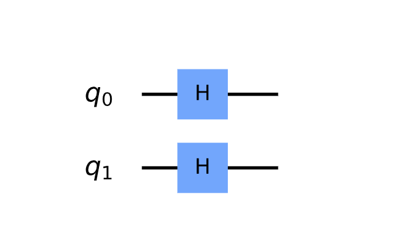

Random Matrix Theory Applied to Deep Belief Signaling Networks

<img src= "https://render.githubusercontent.com/render/math?math=%5Cdisplaystyle+%24I%28ABB_%7BopenAIGYM%7D%28GAN%3B+NAS%3B+ME%3B+MLE%3B+AI%29%29%24%0A%0A%24Inference+%3D+Belief%28I%28ABB_%7BopenAIGYM%7D%28GAN%3B+NAS%3B+ME%3B+MLE%3B+AI%29%29%29%24%0A%0A%24Z+%5Crightarrow+Inference+%24%0A%0AThen%2C+to+learn+on+the+inference%3A%0A%0A%24min_%7BT%7D%7B%5Csum_%7Bi%7D+%5Csum_%7Bj%7D+T_%7Bij%7D+Z_%7Bij%7D%7D%24%0A%0A%24%5Csum_%7Bi%7D+%5Csum_%7Bj%7D+T_%7Bij%7DZ_%7Bij%7D+%2B+%5Cdfrac%7Ba%7D%7B2%7D+%7C%7CT%7C%7C%5E%7B2%7D_%7BF%7D+%2B+%5Cdfrac%7Ba%7D%7B2%7D+%7C%7CT%7C%7C%5E%7B2%7D_%7B2%7Ds.t.+%7C%7CT%7C%7C+%3D+n%24" alt="$I(ABB_{openAIGYM}(GAN; NAS; ME; MLE; AI))$
$Inference = Belief(I(ABB_{openAIGYM}(GAN; NAS; ME; MLE; AI)))$
$Z \rightarrow Inference $
Then, to learn on the inference:
$min_{T}{\sum_{i} \sum_{j} T_{ij} Z_{ij}}$
$\sum_{i} \sum_{j} T_{ij}Z_{ij} + \dfrac{a}{2} ||T||^{2}{F} + \dfrac{a}{2} ||T||^{2}{2}s.t. ||T|| = n$">
subject to $W$ being a valid weighted adjacency matrix (non-negative, symmetric, with zero diagonal). In python, we can express this computation:
# Run inference on information shared between random populations of...
belief_prop = bp.random(population, enviornments, neural_architectures: neural_ode, gan, cnn, rnn; depth: multi, ...)
# Analyze intersection of neural architectures and enviornments (graph signal processing)
GSP.engine(analysis(union for belief_prop), algo_seq: [forward, backward, forward])
GSP.engine can be further optimized through quantum topological search:
# Initialization
import matplotlib.pyplot as plt
import numpy as np
# Importing Qiskit
from qiskit import IBMQ, Aer, QuantumCircuit, ClassicalRegister, QuantumRegister, execute
from qiskit.providers.ibmq import least_busy
from qiskit.quantum_info import Statevector
# Import basic plot tools
from qiskit.visualization import plot_histogram
# Initialize quantum components
n = 2 # qubits
grover_circuit = QuantumCircuit(n)
grover_circuit = initialize_s(grover_circuit, [0,1])
grover_circuit.draw()
def initialize_s(qc, qubits):
"""Apply a H-gate to 'qubits' in qc"""
for q in qubits:
qc.h(q)
return qc
 . . . . . And so on
See references for quantum computing, graph signal processing, and belief propagation: 📖